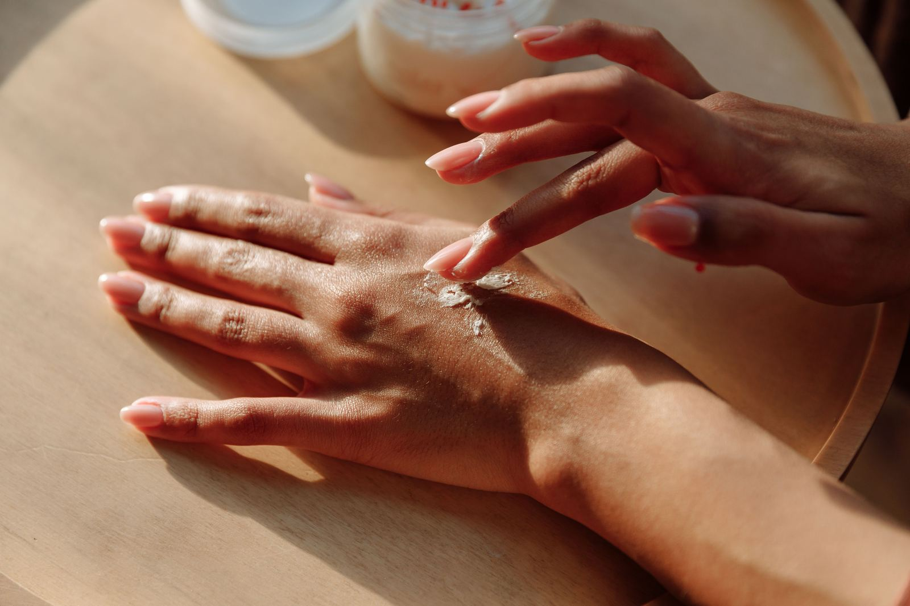

For a long time, sunscreen was the step I was always going to start doing properly — just not today. Not when I was running late. Not when the formula made my face look greasy by noon. Not when it pilled under my makeup or left a white cast that made me look like I'd dusted myself in chalk. I knew, in the abstract, that I should. I just couldn't make myself want to.
What I didn't understand until later was that I wasn't failing at a habit — I was using the wrong products. The sunscreen I'd been reaching for was simply the wrong formula for my skin. Once I found ones that felt like nothing — that dried down soft and light, that didn't sting my eyes, that disappeared into my skin and let me forget they were there — the habit took maybe a week to stick.
Here's the part that genuinely changed how I think about it: up to 90% of visible skin aging — the wrinkles, the hyperpigmentation, the loss of firmness that makes skin look tired before its time — comes not from getting older, but from UV damage. Not 40%. Not 60%. Ninety. Which means most of what we spend on serums and treatments is addressing something we could have largely prevented. SPF isn't an extra step in your routine. It is the routine. Everything else is working around it.
Your future skin doesn't care what you know about sun protection. It only cares about what you actually do every morning.

The right sunscreen should feel like a treat, not a task — light, soft, and invisible on the skin.
Five Ways to Make SPF the Step You Actually Look Forward To
The process of enjoying sun protection isn't about discipline. It's about finding versions of it that fit so naturally into your life that skipping them starts to feel strange. These are the shifts that made it click for me.
This one changed everything for me. The heavy, chalky sunscreens that most of us tried first were an older generation of formulas. Modern sunscreens — particularly from Asian beauty brands — are engineered to be cosmetically elegant: they blend completely clear, feel weightless, and wear beautifully under makeup or on bare skin. The formula matters more than the SPF number.
The reason most routines fail is that they ask too much. Instead of treating SPF as an addition to your skincare, make it the final step — the thing you reach for after everything else, right before makeup or heading out the door. Many tinted SPFs and BB creams now offer strong broad-spectrum protection, which means your "sunscreen step" and your makeup base become a single, elegant moment rather than two. The fewer decisions your morning routine asks of you, the more consistently it happens.
Most people under-apply sunscreen without realising it — and when you use less than the tested amount, the SPF protection drops significantly. Squeeze three lines of sunscreen along your index, middle, and ring fingers. That's your face, ears, and neck covered. It sounds like more than you're used to, but with the right formula, you won't feel it. This is one of those small pieces of knowledge that genuinely changes the result.
Sunscreen doesn't have to carry the entire burden. A wide-brimmed straw hat and a pair of oversized UV-blocking sunglasses aren't just beautiful additions to a summer outfit — they provide immediate, reliable protection for the parts of your face most exposed to direct sun. There's something deeply satisfying about protection that is also an aesthetic choice. You don't need to reapply over a hat. You don't need to worry about your sunscreen sweating off when you're sitting in the shade of a brim.
Reapplication is where most routines quietly fall apart — because nobody wants to wipe off their makeup at midday to start again. You don't have to. SPF setting sprays mist on over your full face and refresh protection without touching your base. Powder sunscreens brush on in seconds and often improve your makeup at the same time. Keep one in your bag the way you keep lip balm. The habit requires almost nothing once you remove the friction.
Physical barriers — a wide-brimmed hat, oversized sunglasses — are protection that also happens to be beautiful.
What I Actually Use
My criteria for a sunscreen I'll actually wear every day is specific: no white cast, no eye sting, no greasy residue, no stickiness, and it has to dry down fast and leave my skin feeling soft — almost like skin care rather than a shield. Asian beauty formulas, particularly Japanese and Korean, have been the only ones that consistently meet all of these. They are formulated to a cosmetic standard that I genuinely haven't found replicated elsewhere.
After years of testing, two products have stayed in rotation consistently — one Japanese, one Korean. Both SPF50+ with very high PA ratings for broad UVA protection. Both feel like almost nothing on the skin.
SPF50+ PA++++
SPF50+ PA++++
One morning at a time.
You don't need to overhaul anything. Find one formula that feels good — really good, not just acceptable — and wear it tomorrow. That's it. The habit grows from there. The skin you're protecting today is the skin you'll be grateful for in ten years, and the best thing about SPF is that it's never too late to start. Your future skin is already listening.
SPF made easy
Find your perfect SPF formula.
eCosmetics has thousands of authentic SPF moisturisers, tinted sunscreens, and UV serums from luxury brands — at prices you'll actually want to reorder.
Frequently Asked Questions
Yes — UVA rays (the ones that cause aging and skin damage) pass through clouds and glass without losing much intensity. Up to 80% of UV radiation still reaches your skin on an overcast day. If you sit near a window at work, your left side is getting UV exposure every single day. SPF every morning, regardless of weather, is the habit that actually protects you.
Most people use about a quarter of what's needed for full protection. The three-finger rule — squeezing three lines along your index, middle, and ring fingers — gives you roughly the right amount for face, ears, and neck. Studies show that applying less than the tested amount can reduce SPF protection by up to 50%. It sounds like a lot until you try it with a lightweight formula, and then it just feels like good skincare.
It helps, but it isn't a replacement. You'd need to apply about a teaspoon of SPF foundation to get the protection listed on the bottle — and nobody does that. The better approach is a dedicated SPF first, then your makeup on top. If you want to combine them, a tinted SPF50 as your base is genuinely effective and means one fewer step rather than two separate ones competing.
Mineral sunscreens (zinc oxide, titanium dioxide) sit on top of the skin and physically reflect UV rays. They're generally better for sensitive or acne-prone skin but can leave a white cast — though newer formulations have improved enormously. Chemical sunscreens absorb UV energy and convert it to heat, tend to be more cosmetically elegant and invisible, and are what most Asian beauty formulas use. Both protect well when applied correctly. The best sunscreen is always the one you'll actually wear.